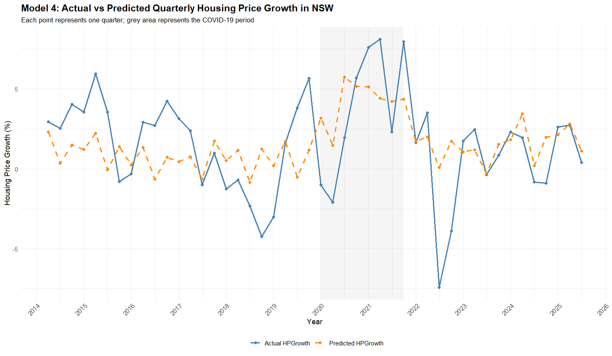
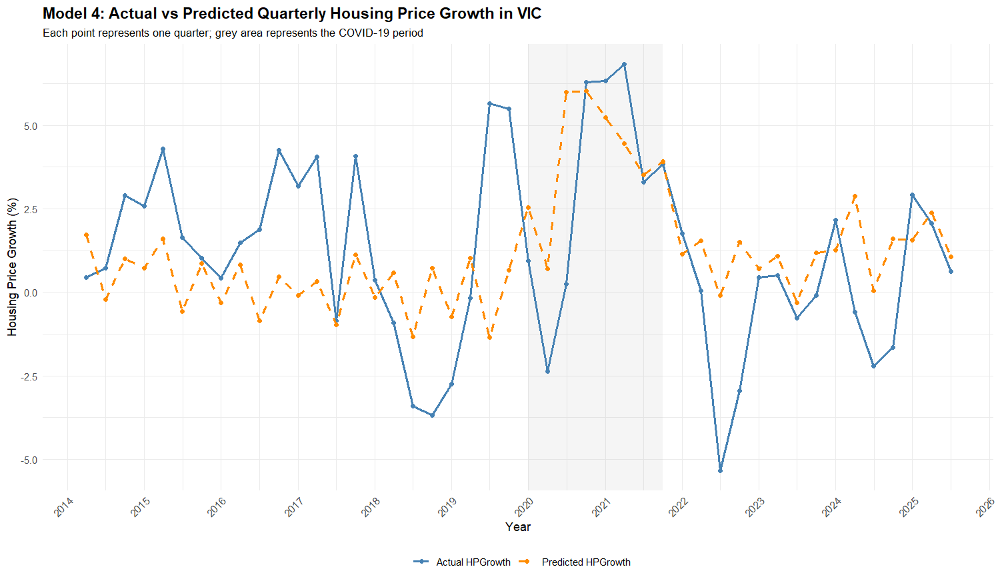
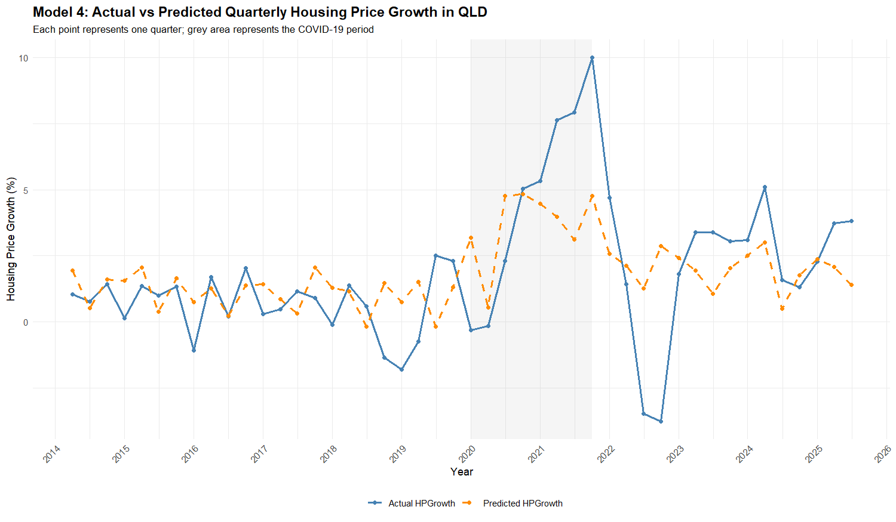
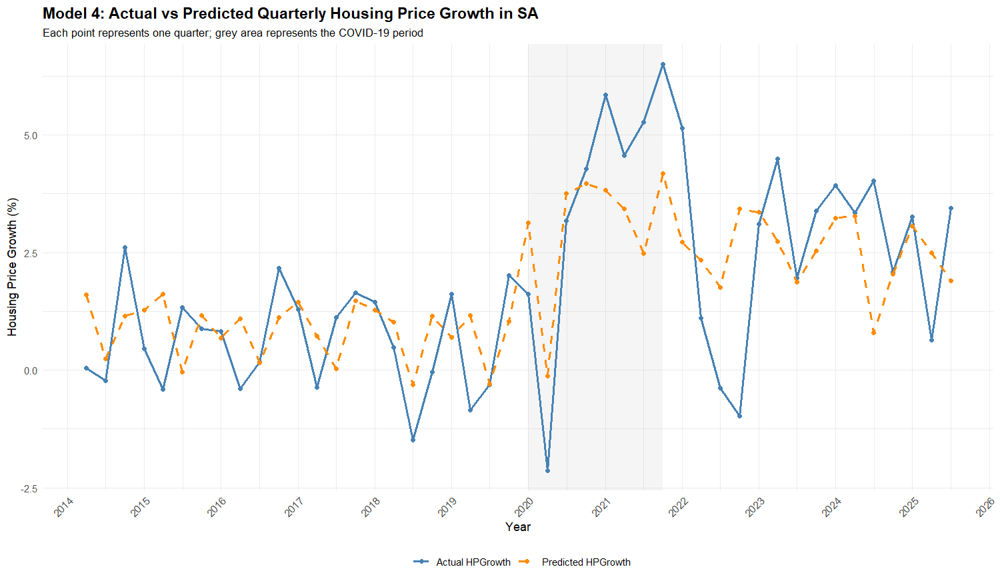
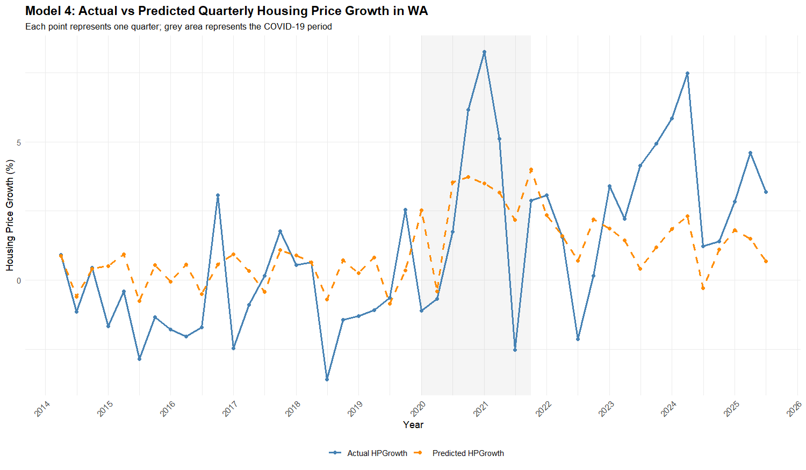

03 / Regression in R
How much of housing price growth can the economy explain?
Quarterly housing price growth in Sydney, Melbourne, Brisbane, Adelaide and Perth from 2014 to 2025, modelled against interest rates, inflation, migration, household income and COVID-19. Five nested regression models, compared honestly.
5 cities, 2014 Q2 to 2025 Q3
from the baseline to the preferred model
p < 0.001, the largest single coefficient

The question
Australian house prices have risen sharply for a decade, and the usual explanation is a list: interest rates, inflation, migration, incomes. I wanted to test that list rather than repeat it. Two research questions came out of the case study that preceded this project:
- What is the relationship between quarterly housing price growth and these economic factors across Australia's five largest cities between 2014 and 2025?
- Which regression specification best explains and predicts that growth, without adding variables that only inflate the fit?
I set the hypotheses before running anything. Interest rates were expected to have a negative coefficient, inflation and migration positive, household income positive, and COVID-19 and federal elections were tested as period effects. Two of those expectations turned out to be wrong, which I cover below.
The data
A panel of five capital cities observed every quarter from 2014 Q2 to 2025 Q3: 46 quarters per city, 230 observations in total. The dependent variable is the quarter-on-quarter percentage change in mean dwelling price, not the price level, so the model is not just chasing a trend.
| Variable | Level | Source |
|---|---|---|
| Housing price growth (%) | State, quarterly | Calculated from ABS mean dwelling price |
| Interest rate (%) | National | RBA cash rate target |
| Inflation (%) | National | ABS Consumer Price Index |
| Net overseas migration | National | ABS overseas migration statistics |
| Household income per capita | State, annual | ABS household income and wealth |
| COVID-19 dummy | 2020 Q1 to 2021 Q4 | Period flag |
| Election dummy | 2016, 2019, 2022, 2025 | Federal election years |
| Quarter dummies, time trend, state dummies | Controls | Q1 and South Australia are the reference categories |
Assembling this was most of the work. Each series came from a different ABS or RBA release at a different frequency, so I built the panel in Excel first, then loaded a single clean CSV into R so the whole analysis reruns from one file.
What the data showed
-
01
Macro variables explain about a quarter of the variation, and no more. The baseline model with only trend, season and state controls has an adjusted R² of 0.049. Adding interest rates and inflation lifts it to 0.102; adding migration and income to 0.197; adding the COVID-19 period to 0.238. Every step helps, but the ceiling is low. Roughly three quarters of quarter-to-quarter movement is driven by things not in this model.
-
02
COVID-19 was the single largest effect. In the preferred model, the 2020 to 2021 period is associated with quarterly growth 2.63 percentage points higher than otherwise (p < 0.001). As a single variable it lifted adjusted R² by 0.041, and the effect is visible in the charts: every city's actual line climbs above the predicted line through the shaded band.
-
03
Two signs came out opposite to the hypothesis. Interest rates have a positive coefficient (0.523, p = 0.016), not the negative one I expected, and net overseas migration is negative (p < 0.001). I report both as they are. The likely reason is that the RBA raises rates when prices are already rising, and the migration series is national while prices are measured by state, so the variables are picking up timing rather than a causal push.
-
04
Inflation and the third quarter are consistently significant. A one-point rise in quarterly CPI is associated with 1.46 points more housing growth (p < 0.001). July to September runs 1.65 points below the first quarter (p < 0.001), and that seasonal dip holds in every one of the five models. Household income was never significant.
-
05
Adding an election dummy made the model worse. Model 5 nudged plain R² up from 0.2811 to 0.2822, but adjusted R² fell from 0.2378 to 0.2354 and the election coefficient was not significant (p = 0.568). That is exactly why adjusted R² is the criterion. I chose Model 4.
Model comparison
The five models are nested, so each row adds one variable group to the row above. I compared them on fit and on prediction error rather than either alone.
| Model | Adds | R² | Adj. R² | RMSE | MAE |
|---|---|---|---|---|---|
| 1 | Trend, quarter, state | 0.0823 | 0.0491 | 2.633 | 2.031 |
| 2 | + Interest rate, inflation | 0.1412 | 0.1019 | 2.547 | 1.986 |
| 3 | + Migration, household income | 0.2387 | 0.1967 | 2.398 | 1.862 |
| 4 | + COVID-19 dummy | 0.2811 | 0.2378 | 2.331 | 1.787 |
| 5 | + Election dummy | 0.2822 | 0.2354 | 2.329 | 1.791 |
All five models are significant overall (F-test p < 0.05; Model 4 p = 2.2 × 10−10). RMSE and MAE are in percentage points of quarterly growth. MAPE was not used because growth is often negative or near zero, which makes percentage errors meaningless.
Actual against predicted, all five cities
A fit statistic says how much the model explains on average. These charts show when it fails. In every city the model tracks the quiet years reasonably and misses the extremes: the 2020 to 2021 surge, and the sharp 2022 correction when rates rose.




How it was built
Nested models, one added group at a time. Five ordinary least squares regressions in R using lm(), each adding one group of variables to the last, so the change in adjusted R² at each step is attributable to that group. Every model keeps quarter dummies, a linear time trend and state dummies so that season, drift and city differences are controlled for before any economic variable is credited.
Two selection criteria, not one. Adjusted R² for explanatory power, then RMSE and MAE computed from the residuals for prediction accuracy. A model had to improve on both to be preferred. Model 4 has the highest adjusted R² and the lowest MAE.
Hypothesis tests written down first. An F-test for each model overall and a t-test for each coefficient at the 5% level, with the expected sign recorded before estimation, so the two wrong-signed results could be reported as findings rather than quietly dropped.
Reproducible end to end. The analysis is an R Markdown file that reads one CSV and produces every table and chart on this page. It was submitted with the R script, the dataset and a README so a marker could rerun it from a clean folder.
Limitations I'd state up front
- Mismatched levels. Interest rates, inflation and migration are national series; prices are measured by state. That alone caps how much city-level variation they can explain, and probably drives the odd migration sign.
- Association, not causation. This is OLS on observational data with no lags or instruments. The positive interest-rate coefficient almost certainly reflects the RBA responding to prices, not the reverse.
- Autocorrelation was not modelled. Quarterly growth is likely to depend on the previous quarter. The standard errors are therefore optimistic, and a lagged dependent variable or an ARIMA-type error would be the next step.
- Missing variables. Construction costs, housing supply, unemployment, credit conditions and state housing policy are all absent. The 2022 correction and Perth's recent boom are where their absence shows most.
- Incomplete first quarter. Some states have no Q1 2014 observation, so the panel begins in 2014 Q2 and the 2014 and 2025 years are partial.